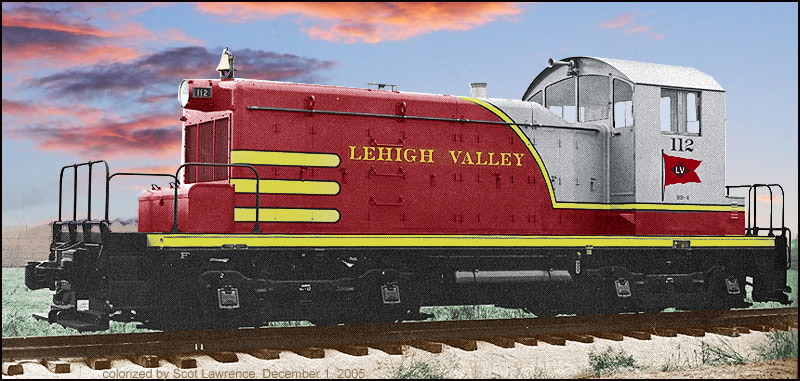
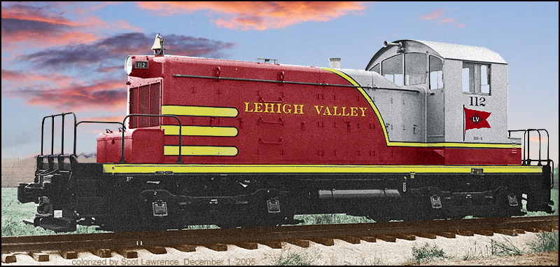

Lehigh Valley Railroad Survivors


Lehigh Valley Railroad Survivors

| Welcome
to the Lehigh Valley Railroad Survivors web pages!
Originally this project started out as a database of surviving LVRR locomotives only. It then evolved to include other LV rolling stock, structures, etc. Then a current route map, then I went and did some "tours" of LV sites today..it just keeps growing! So many great people out in "Railroad Internet Land" have helped find the data on the pages.. (please see a list of contributors on the locomotives page) Thanks to everyone! These pages are for all LV fans. I hope you find them interesting and useful. -Scot There
are now thirteen different pages in the "LVRR Survivors" web pages.
1. Surviving LV Locomotives , I consider this the "main" page. 2. The other surviving LV stuff page. Cabooses, other rolling stock, structures, bridges etc. 3. The Map page. LVRR system map with lines in use today. 4. Tour of Van Etten junction today. 7. Tour of the Sayre Walkbridge. 8. LV SW1 112 has Her own page. 9. LV Alco S2 switchers 151 and 165 have their own page. 10. LV SW8 262 has Her own page. 11. LV C-420 408 has Her own page. 12. Caboose 95011 has Her own page. 13. Lehigh
Valley
Railroad
Links More Tours here! Tours
of
other
railroad
sites around New York state. Have
you seen the new Lehigh Valley SD70's?!
Scot
Lawrence, Rochester NY |